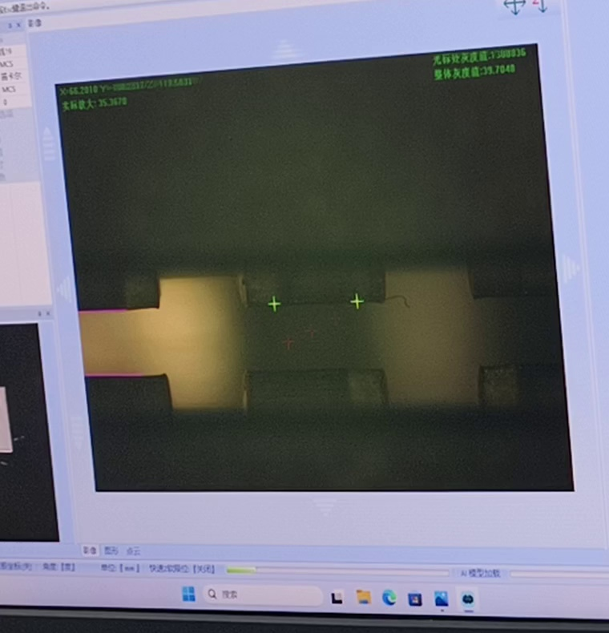
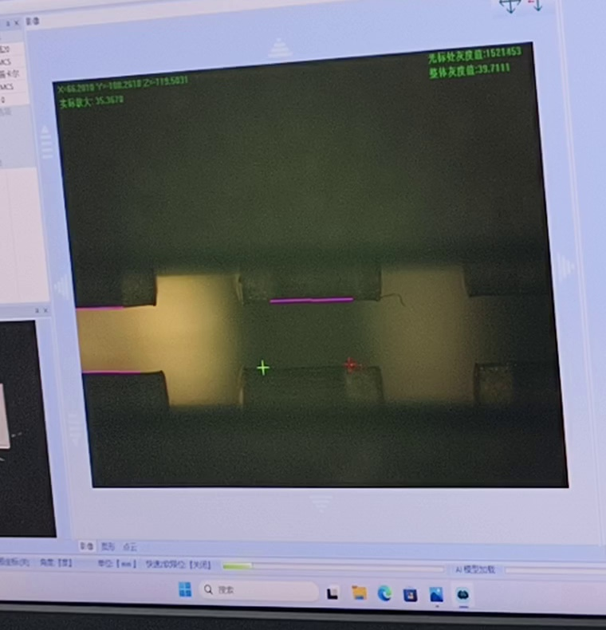
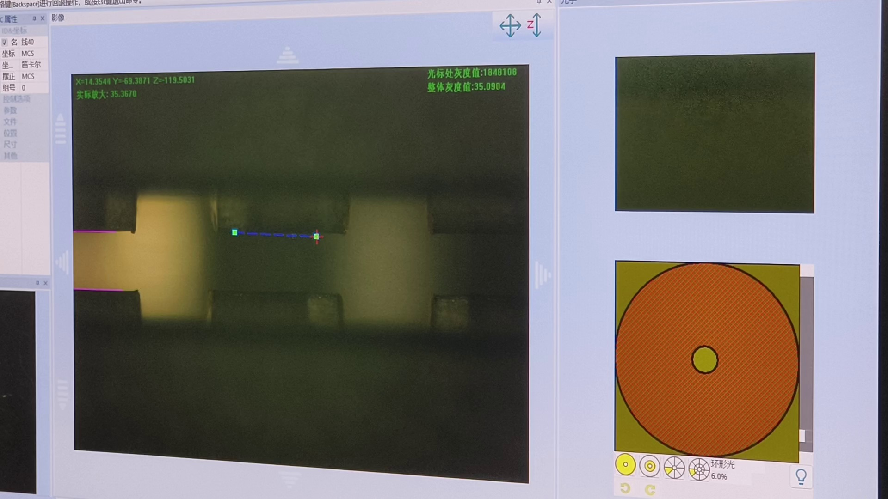
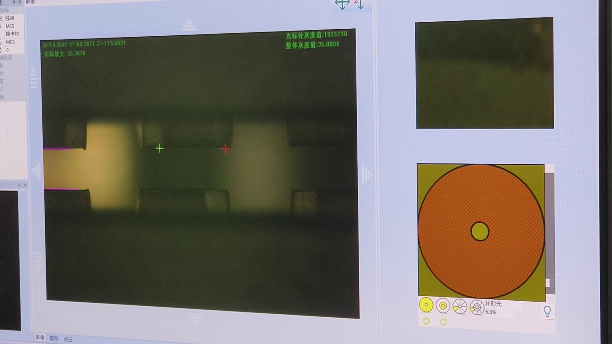
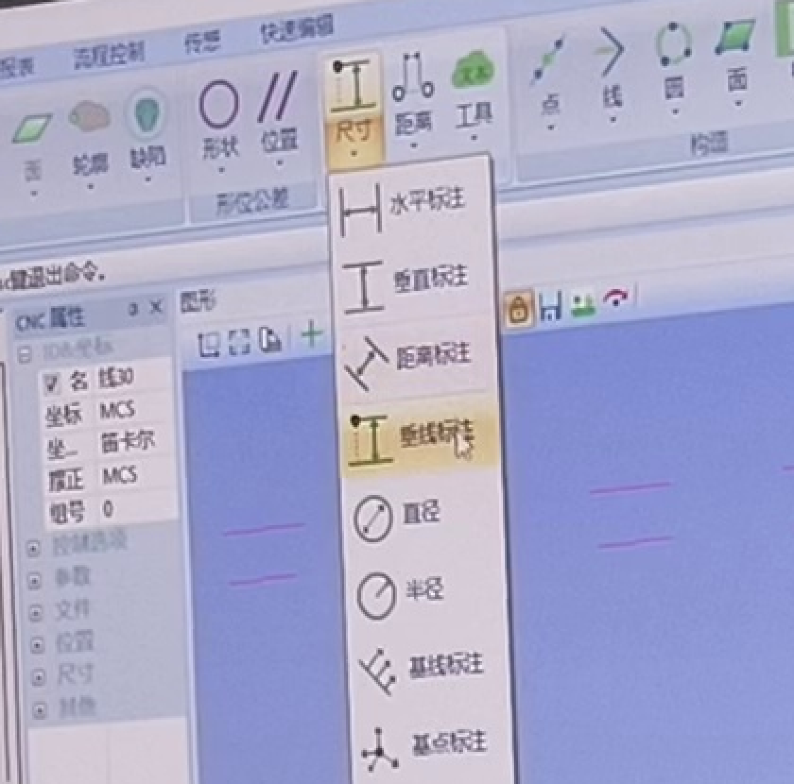
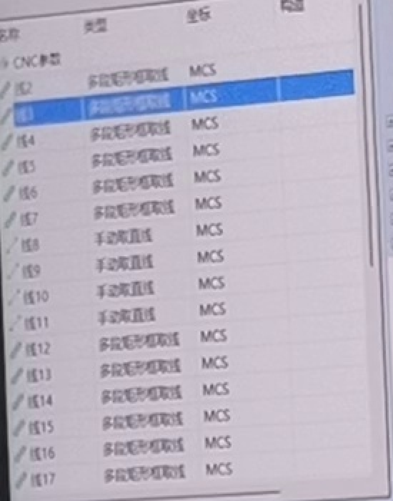
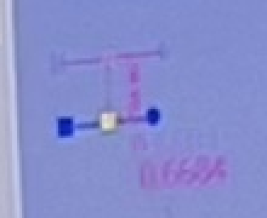
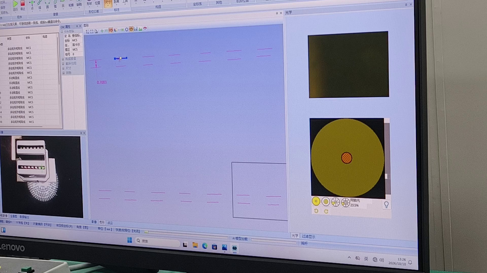

实验室开口测量视频核查
2026-10-15 · 7 个文件 / 6 段不同视频 · 约 10 分钟 · 对关键操作加密抽帧核对
主要发现：中间较暗位置确实存在手动建线；取点主要落在朝向开口的较直实体边段，避开两端转角。视频也出现矩形区域取线与重新建线，最后采用“垂线标注”。这些测量定义与当前相机的中央 49 列暗区间距中位数不同。
可直接回看的证据
点击图片查看原尺寸截图。时间为视频内的播放时间。视频文件名不代表产品号，截图像素也不能直接换算成工件尺寸。

video5.mp4 · 01:40 上边取点上方实体朝向开口的边缘出现两个独立绿色十字。两点在较直的一段上，左右都没有选到转角；右肩附近有不规则轮廓。

video5.mp4 · 01:42 下边取点上边已成为紫色直线；下方实体朝向开口的边缘出现左绿、右红十字。与上下各两点建线的操作相符。

video7.mp4 · 00:15 区域取线阶段较暗的位置先出现绿色端部方块和蓝色虚线工具。工具区域不是实际成像边缘，不能把绿色手柄直接当作后台全部采样点。

video7.mp4 · 00:27 再次手动取点同一视野中的暗处上边出现左右分开的绿、红十字；00:30可见较长紫线。操作由区域工具转为手动建线的迹象，与元素类型列表相互印证。

video3.mp4 · 02:35 垂线标注尺寸菜单中选中的是“垂线标注”。其与“垂直标注”是分列的菜单项。

video3.mp4 · 02:37 元素类型列表中可辨认“手动直线”，同时存在其他较长名称的取线类型。这里不强行转录模糊的类型名称。

video3.mp4 · 02:37 尺寸图形可见上下线及尺寸标注。标注靠近线段中部，但此录屏不足以确定软件是否固定用中点、端点或其他基准作垂线；数字不够清楚，不转录。

video1.mp4 · 02:19 已完成的尺寸左上第一对线已完成尺寸标注，可辨示值为 0.7063，界面单位为 mm。这里只记录视频中的该次显示值，不能根据文件名把它对应到 Excel 某件产品或某个 U/L 点位。
与现有相机算法的差别
| 项目 | 实验室视频可见行为 | 现有相机实现 |
|---|
| 取边 | 沿朝向开口的实体轮廓建线；暗处存在手动取点 | 按灰度阈值寻找暗区边界，灰色过渡带会影响落点 |
| 取点跨度 | 手动选择近似平直的一段；上下跨度不一定完全相同 | 固定中央 49 列，取间距中位数 |
| 距离 | 两条已建立的线使用“垂线标注” | 图像列方向的上下边坐标差 |
| 成像 | 画面中实体较暗、孔隙较亮，中间部分边界对比低 | 原图中金属高亮，开口内有灰色反光或暗区 |
建议的实施顺序
- 先在同一张相机原图上建立四点手动对照模式：上下各两点定线，明确基准线、测量位置及垂距规则。该对照用于定位选边差别，不替代实验室校准。
- 把确认后的边段绑定到工件局部坐标，在相同边段内自动取多点并拟合直线。不要跨越转角、不同层台阶，也不能把真实凸起一律删除。
- 为中间暗处检查光照、反射和焦点；若原图没有稳定可分辨的对应实体边，先改善成像，不能仅靠延长拟合线解决。
- 用同一件工件连续拍摄和重新取放拍摄检查重复性；边定义稳定后再重新评估像素比例和逐位偏差，并用未参与求补偿的新工件验证。
证据边界：视频支持选边范围、建线方式和明暗边界存在差异，但不能把当前全部残差归因于实验室。矩形工具的后台算法、非平行线时垂距的具体基准，以及视频与 Excel 产品/点位的对应关系仍未确认；未获得可与 Excel 逐点匹配的完整读数。手机斜拍屏幕，不能用截图像素直接反推工件实际角度或毫米数。
视频索引
video(6).mp4 与 video.mp4 的 SHA-256 相同，仅检查一份。此次只读取视频并保存分析截图，没有修改源视频、Excel 或测量算法。